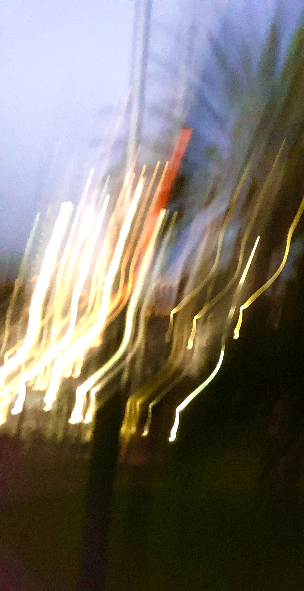
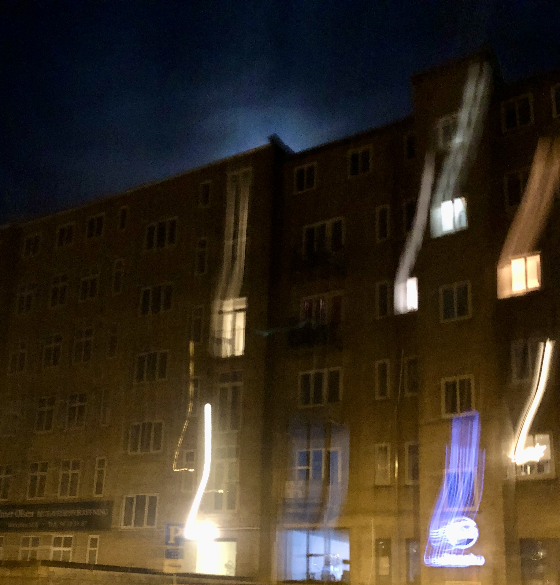
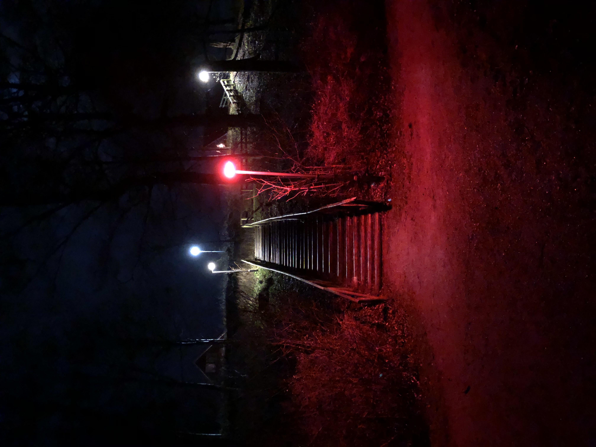
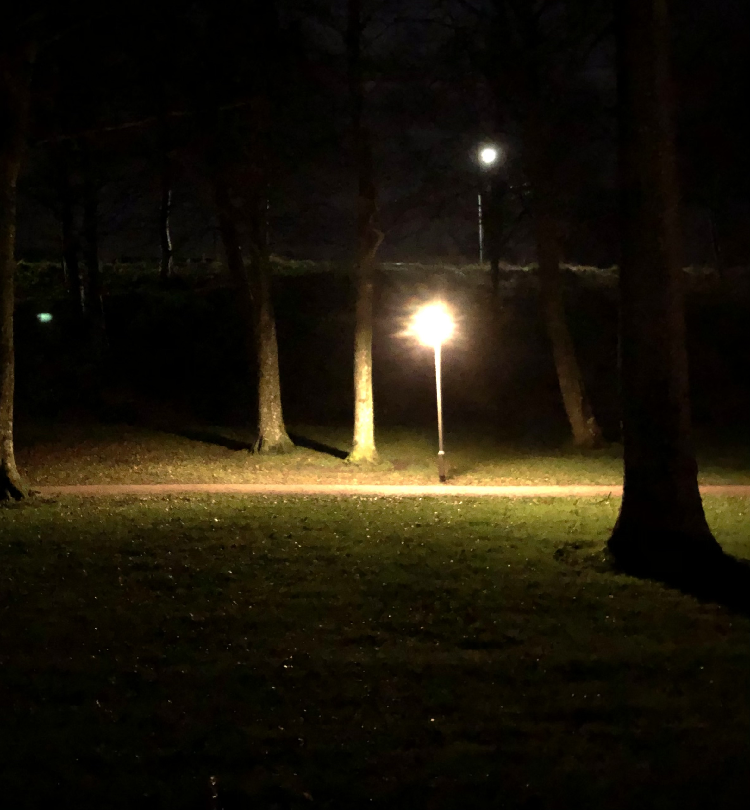
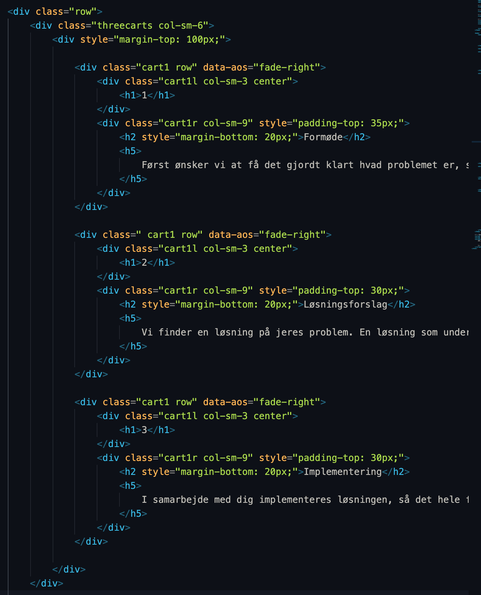
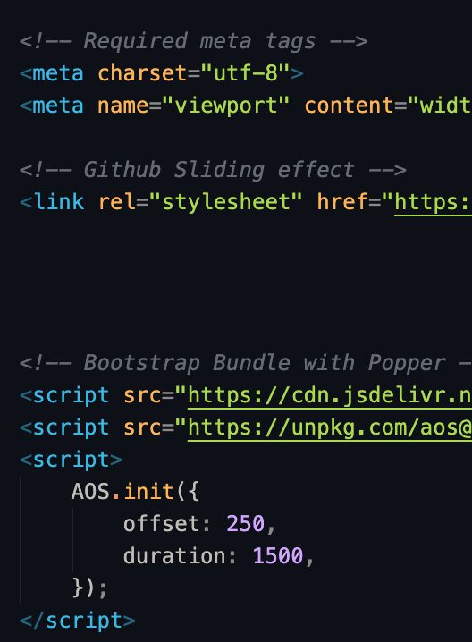
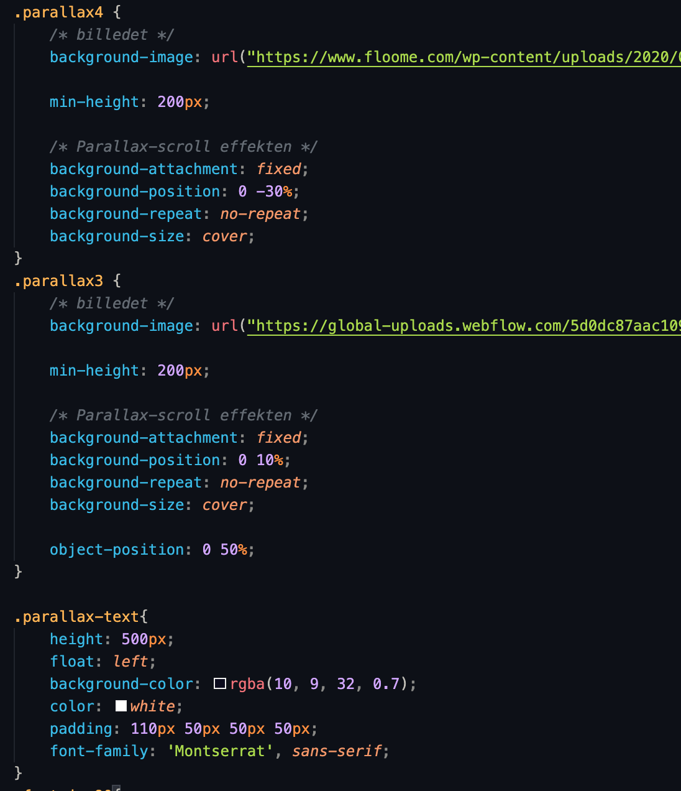

FREYA-IT har som fokus at få den potentielle kunde til at kontakte firmaet, gennem de forskellige kontaktmuligheder. Der sælges altså ikke noget direkte på hjemmesiden. At firmaets hovedformål er at føre kunden til at kontakte os, ses bl.a. ved at der på alle sider er en eller flere muligheder for at komme ind på undersiden kontakt. Det skal netop være så nemt og overskueligt som overhovedet muligt at komme i kontakt med FREYA-IT.
Målgruppen for FREYA-IT er den professionelle borger i alderen 20-70. Idet FREYA-IT hjælper med IT-løsninger ønskes det derfor at hjemmesiden udstråler professionalitet, og integritet. Den blå farve udstråler netop dette. Det minimalistiske udseende, med lækre detaljer, bruges endnu en gang til at give et professionelt udtryk og sælge til bl.a. virksomhedsejeren som ønsker et veludført stykke arbejde.

Under udviklingen af hjemmesiden er der selvfølgelig brugt forskellige metoder og modeller. Her er den iterative udviklingsmodel bl.a. benyttet: der var først en idé for hjemmesiden, for en ønsket effekt - Heri spillede det minimalistiske look en stor rolle for at opnå et professionelt udtryk. For at fuldbyrde denne ide designes hjemmesiden, med løbende forbedringer, hvor det som kodes afprøves, og eventuelt tilrettes.
For at opnå det minimalistiske design er der blevet gjort stor brug af gestaltlovene - Heraf lovene for lighed, lukkethed og kontinuitet. Vigtigst af disse er kontinuitet, idet kontinuitet over hjemmesiden vil giver overblik og simplificere hjemmesidebesøget for brugeren. Det ses bla. At der er brugt meget få forskellige design-elementer, og undersiderne er bygget ens op.

For at fange brugeren er AIDA-modellen benyttet, der skal være blikfang på siderne, hvilket findes i de store overskrifter og/eller billede. Dette skal så lede til en interesse, som det ses på forsiden hvor der står: ”Simpel og sikker IT i hverdagen”. Her indfanges brugeren virkeligt. Det fede ved denne frase er at den er del af et element som går længere ned på siden, hvor den så fungere som overskrift. Her sælges den service FREYA-IT kan tilbyde med en tekst der fortæller hvad vi kan. I samme lukkede boks er det muligt at klikke på ”kontakt”, hvor den sidste del af AIDA-modellen kommer i værk ’action’. Nu er brugeren ledt ind til at kontakte firmaet, og hjemmesidens opgave er fulbyrdet.
Målgruppen for FREYA-IT er den professionelle borger i alderen 20-70. Idet FREYA-IT hjælper med IT-løsninger ønskes det derfor at hjemmesiden udstråler professionalitet, og integritet. Den blå farve udstråler netop dette. Det minimalistiske udseende, med lækre detaljer, bruges endnu en gang til at give et professionelt udtryk og sælge til bl.a. virksomhedsejeren som ønsker et veludført stykke arbejde.

Hvis FREYA-IT skal videreudvikles herfra, skal en metode at kommunikere direkte på siden kodes. således at brugeren på kontakt-undersiden, kan kommunikere med FREYA-IT uden at skulle væk fra hjemmesiden. Her vil det være smart med en database med samtalerne, således kunde, såvel som dem bag FREYA-IT, kan gå tilbage og se beskederne.
I en opdateret version vil det være nødvendigt at gøre hjemmeside brugbar på andre skærmstørrelser end computerskærmen. Hjemmesidens design er specielt lavet til at se godt ud på en størrelse skærm svarende til den normale computer. Til design er netop brugt en blanding mellem Bootstrap columns og normal CSS med margin, align, float og position. At der er brugt denne blanding, giver problemer, når skærmstørrelsen er mindre. For at løse dette problem skal hjemmesidens opbygning tæt på udelukkende bestå af de forskellige muligheder bootstrap giver, eller udelukkende selv gøre det hele i CSS.
På billedet til højre ses et udvalgt stykke HTML, heri er netop brugt Bootstrap-columns og et stykke JavaScript fra Github. Dette koder for forsiden, hvor der i venstre side haves 1 trin, og højresiden en blå boks, som kort forklarer FREYA-IT.
Helt i toppen bruges i en div, class=”row”, for at definere en række a kolonner, lige nedenunder bruges så col-sm-6, for at få de tre vogne til venstre til at fylde halvdelen af siden. Herunder kan de tre ”vogne” ses, hvilke i koden kaldes ”cart”. I hver vogn bruges også class=”row” fra bootstrap, for at kunne opdele den enkelte vogn i to, hvilket gør det muligt at skrive et nummer uden for et stykke tekst. (se hjemmesiden). Den blå boks til højre er ikke taget med på billedet af koden.


På billedet ovenover kan det ses at der for hver ”vogn” er defineret et data-aos=”fade-…” Dette referer til et stykke kode, hovedmæssigt javascript, som er hentet fra Github. Dette er udgivet af en privat person, og jeg har øverst i min kode (under <head>) linket til dette, på samme måde som til Bootstrap, og nede i bunden af min kode (under <script>) har jeg skrevet javascript til at sætte ”duration” og ”offset” (hvornår effekten sker). På billedet til venstre er de to dele sat sammen, øverst med link og referencer til hans kode, og i bunden det javascript som definerer tid, og placering af effekter.
Dette data-aos giver mulighed for forskellige effekter, hvor elementer enten slider ind, fader ind, vender ind, eller zoomer ind. Jeg har hovedmæssigt brugt ”fade-right” eller ”fade left”, hvilket giver den ”fade-sliding effekt” som kan ses når man scroller ned af siden.
Her til højre ses det som kaldes en parallax, dette giver at et billede sættes fast på siden, mens resten bevæger sig hen over det. Dette kunne bl.a. ses på toppen af denne side. I FREYA-IT kan det ses på forsiden og alle de andre sider, helt i toppen. Det specifikke CSS set til højre blev brugt på forsiden, nede i bunden, hvor to billeder overlapper hinanden, mens man scroller, alt imens der er tekst ovenpå. Egentligt så sættes billedet bare som et baggrundsbillede, og så sættes dets position som ”fixed” til sin position. På billedet til højre ses CSS for de to baggrundsbilleder, Parallax4 og Parallax3, og herudover CSS for den tekst som kan ses ovenpå billederne.

Jeg sammenligner med hjemmesiden 3hpc.dk. Denne hjemmeside er uoverskuelig. Der er ikke noget egentligt blikfang til at fange interessen, og brugeren ledes derfor ikke videre i hjemmesiden. Ramte jeg ind i denne hjemmeside, vil jeg finde et andet firma, alene af den grund at jeg ikke orkede læse den tætskrevne tekst. Det ses her tydeligt at designeren ikke har benyttet AIDA-modellen.
Når man åbner 3hpc.dk sker et par animationer i toppen, hvilke kan sammenlignes med de "fade-sliding" effekter jeg har på min, der er dog den kæmpe forskel at deres effekter er 'timede' hvor dem på FREYA-IT sker ved 'scroll'.
Hos 3hpc.dk lægger de også stor vægt på at det skal være nemt at komme i kontakt til dem, de har derfor på alle undersider en mulighed for dette - ligesom på FREYA-IT. Den største forskel ligger derfor i at 3hpc.dk ikke skaber interesse som FREYA-IT gør, ved brug af AIDA-modellen.